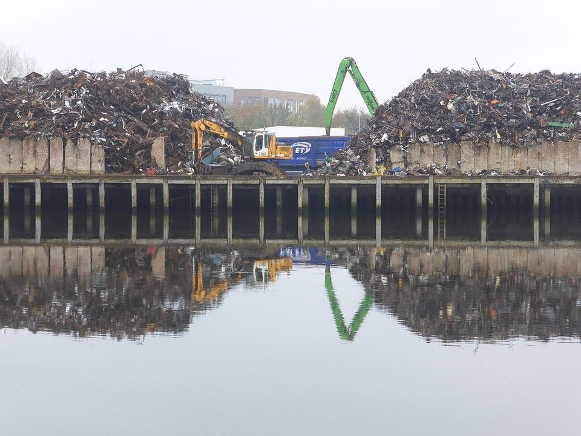
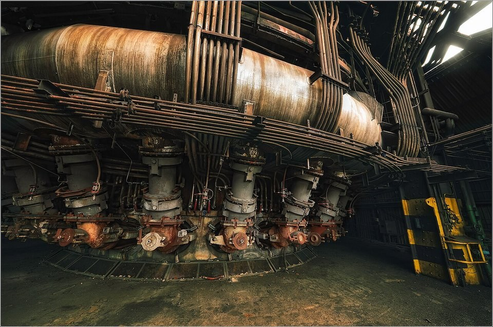

CHINA STEEL · SUSTAINABILITY REPORT · 2025
中鋼 2025 永續報告書導讀：改設基準年、碳費上路，減碳路徑重新校準
鋼鐵潮流工作室 · 發布 2026.10.06

本期重點
2025 年（民國 114 年）是台灣碳費正式上路、歐盟 CBAM 進入正式期前的最後一年，也是中鋼營運最艱困的一年：鋼胚產量降至 760.6 萬噸，合併營收 3,172 億元，稅後虧損 35.07 億元，每股虧損 0.29 元。這本報告最大的變化，是把減碳基準年從 2018 年改為 2021 年，並參考科學基礎減量目標倡議（SBTi）的精神，訂出 2030 年較 2021 年減碳 25.3% 的新目標。
- 排放：範疇一加二排放 1,750 萬噸，較 2024 年減少 6.7%，較新基準年 2021 年減少約 21.5%；每噸鋼胚排放降到 2.30 噸。
- 減碳行動：2025 年完成 178 件減碳行動，2021 年以來累計 1,046 件，年減碳量 145.16 萬噸，相當於基準年的 6.51%。
- 減碳主力換人：新路徑中，「增用廢鋼、減用鐵水」占 2030 年減量的 57.5%，「使用低排碳原料」占 25.5%，再生能源與節能各只占 1.5%。
- 碳費：中鋼提出自主減量計畫並通過環境部審核，以爭取碳費優惠費率；內部碳價維持每噸 300 元。
- 未達標項目：精緻鋼品銷售占比 11.5%（目標 11.8%），員工失能傷害頻率 0.25（目標 ≤0.18），粒狀物減量因煉焦爐工程延期而未達標。
報告書基本資料
| 報告期間 | 2025 年 1 月 1 日至 12 月 31 日（民國 114 年） |
|---|---|
| 發行 | 2026 年 8 月（上一版 2025 年 6 月） |
| 揭露範疇 | 中鋼公司本身，不含子公司；財務數字與合併財報一致 |
| 編製準則 | GRI 準則 2021、證交所永續報告書作業辦法，對照 SASB 鋼鐵業指標、TCFD；新增 IFRS S1／S2 導入時程 |
| 外部確信 | BSI 英國標準協會依 AA1000 保證標準查證 |
| 原文下載 | 中鋼 ESG 專區（PDF） |
關鍵數字
一、經營者的話：碳有價的時代
董事長黃建智與總經理陳守道指出，2025 年國內碳費正式上路、2026 年歐盟 CBAM 全面實施，「碳有價」已從政策討論變成實際的經營成本；下游客戶也要求低碳鋼材與產品碳足跡透明。中鋼面對技術、資源（低碳原燃料與廢鋼供應）、資本（設備更新）與人才斷層等挑戰，延續「二軸三轉」策略，並將 2026 至 2035 年的兩大主軸定為「高值化精緻鋼廠」與「發展綠色技術與能資源」：
- 低碳轉型：以碳領銷。 從「以產領銷」改為「以碳領銷」，每季依碳排量動態調整產品組合。2025 年精緻鋼品出貨 78.7 萬噸、銷售占比 11.5%，毛利占比突破九成。
- 數位轉型：AI 賦能智慧生產。 「智慧燒結再造」專案每年減碳約 4.6 萬噸、創造超過 8,000 萬元效益，獲《哈佛商業評論》鼎革獎。
- 供應鏈轉型：以大帶小。 協助下游廠商切入 AI 伺服器與國際品牌供應鏈。
值得一提的是，中鋼在 S&P Global 企業永續評比中名列全球鋼鐵業第二。
二、氣候變遷：基準年改為 2021 年
2024 年版報告以 2018 年為基準年、目標 2030 年減碳 25%；2025 年版改以 2021 年為基準年（範疇一加二約 2,230 萬噸，範疇二以市場基礎法計算，並納入生物源二氧化碳），參照 SBTi 精神的「行業別指定削減率」，訂定 2030 年減碳 25.3%，即排放降到約 1,665 萬噸。逐年的排放上限為 2026 年 2,082 萬噸、2030 年 1,664 萬噸、2035 年 1,437 萬噸。
2025 年排放已比 2021 年低約 21.5%，表面上離 2030 年目標只差不到 4 個百分點；但其中大部分來自減產，2025 年產量比 2021 年少了 21.5%，每噸鋼胚的排放強度與 2021 年同樣是 2.30 噸。換句話說，若鋼市回溫、產量回升，排放也會跟著回來；真正的減碳要靠下表的製程措施降低排放強度。

三、碳費、碳價與資本支出
- 自主減量計畫。 中鋼屬碳費徵收對象，2025 年提出自主減量計畫並通過環境部審核，訂定 2025 至 2030 年逐年排放目標，具法規約束力，以爭取優惠費率。計畫核定的 2025 年排放目標為 2,153 萬噸，實際排放 1,750 萬噸。
- 內部碳定價。 延續每噸 300 元，用於評估資本支出與研發投資效益。
- 減碳投資。 2025 年資本支出預算 134.5 億元，其中減碳資本支出 22.9 億元（約 17%），氣候調適資本支出 8.1 億元（約 6%）。
- 碳足跡與 CBAM。 2025 年分析 22 大類碳鋼產品的碳足跡，並依歐盟 CBAM 規範建置產品排碳量盤查與產品分類能力。
四、能源與綠電
- 單位能耗。 每噸鋼胚能耗 22.70 GJ，連續兩年下降。
- 綠電。 2025 年取得綠電及憑證共 2,859 萬度，少於 2024 年的 3,386 萬度；自發自用太陽能 529 kW。
- 占比仍低。 總能源使用 1.80 億 GJ，再生能源使用率 0.058%，外購電力占 4.90%。
- 集團光電。 中鋼光能公司在集團 17 家公司屋頂累計設置 101.0 MW，2025 年貢獻 1.13 億度綠電。

五、環境與循環經濟
- 廢棄物。 2025 年處理量 47.5 萬噸，每噸鋼胚 62.42 公斤，資源化率 94.8%，資源化後廠內利用率 94.5%。
- 水資源。 每噸鋼胚新水 1.84 噸（2024 年 2.03 噸），再生水占整體用水 61.0%，製程用水回收率 98.6%。
- 空污。 氮氧化物 3,979 噸，創五年新低；硫氧化物 4,591 噸，較 2024 年增加。粒狀物減量未達標，原因是煉焦爐及乾式淬火設備第一期工程延至 2026 年 6 月投產。
六、人與安全
- 人力。 2025 年底總勞動人力 16,857 人：全職員工 9,246 人（女性 348 人），協力人員 7,570 人，派遣 41 人。
- 訓練。 員工訓練總時數 23.0 萬小時，較 2024 年減少；訓練支出 5,790 萬元。
- 安全。 全年無員工死亡事件，但員工失能事故 5 件，失能傷害頻率升至 0.25，未達 ≤0.18 的管制目標；協力廠商失能事故 4 件。
七、產品與國際評比
- 再生材鋼品。 2025 年接單 8 萬噸，超過 5.5 萬噸的年度目標；首度以全廢鋼生產冷軋及鍍鋅 RC90 產品並取得驗證；IF 汽車用鋼 RC30 取得經濟部資源再生綠色產品認證。
- 精緻鋼品。 2026 年目標銷售占比 12.8%，2030 年 20.0%。
- 評比。 獲世界鋼鐵協會 2026「永續發展優勝企業」；入選道瓊領先指數（DJBIC）世界與新興市場指數；S&P Global 2026 永續年鑑 Top 5%（2025 年版為 Top 1%）；CDP 氣候變遷與水安全皆為 A−。
導讀觀點
- 基準年從 2018 年改為 2021 年，目標從 25% 微調為 25.3%，但起點排放較高（2,230 萬噸對 2,210 萬噸），閱讀前後年度報告時要注意比較基礎不同。
- 2025 年排放比基準年低 21.5%，主要來自減產；每噸鋼胚排放強度仍在 2.30 噸，與 2021 年相同。
- 新路徑把近六成減量押在增用廢鋼，台灣廢鋼供給、價格與殘留元素控制，將直接決定 2030 年目標能否達成。
- 再生能源使用率從 0.067% 降到 0.058%，綠電取得量也下降，綠電在一貫作業鋼廠的減碳角色有限。
- 自主減量計畫核定的 2025 年排放目標（2,153 萬噸）遠高於實際排放（1,750 萬噸），在現行規則下爭取優惠費率的空間充裕。
延伸閱讀
- 中鋼 2024 永續報告書導讀：減碳進度、綠能與循環的成績單
- CBAM 一次看懂：歐盟碳邊境調整機制的由來、規則與時程
- 廢鋼從哪裡來：全球規模、三種來源與處理流程
- 碳有價元年：台灣碳中和 2026 進度與鋼鐵業壓力
資料來源
- 中國鋼鐵股份有限公司 114 年永續報告書（中鋼，2026-08）
- 中國鋼鐵股份有限公司 2024 年永續報告書（中鋼，2025-06）
- 中鋼永續目標及達成情形（中鋼）
本文為報告書重點整理與觀點，數字以中鋼原文為準；標示「本站計算」者為依原文數字換算。2024 年部分數字依 2025 年版報告書重編後的數值。內容僅供產業資訊參考，不構成投資建議。